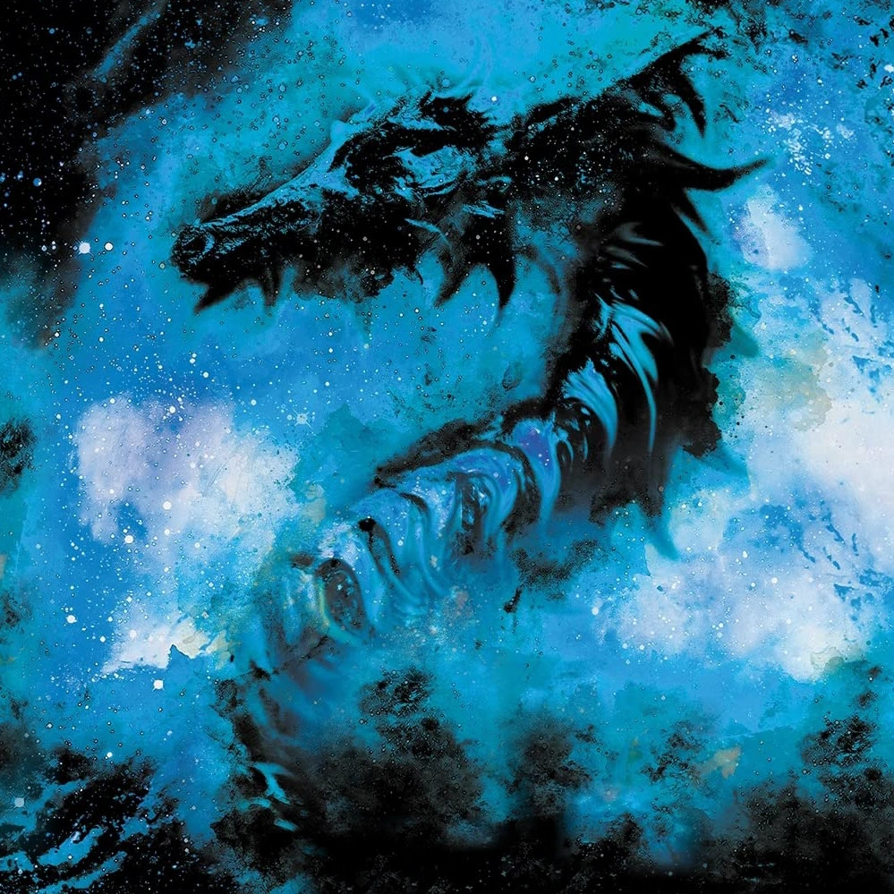

✦ ARCHIVES DES ESCOUADES DIVINES ✦
Ésilwen
Déesse de la Lumière
Escouades Divines
✧ Registre ✧
- Nom
- Ésilwen
- Grade
- Déesse de la Lumière
- Armée
- Escouades Divines
- Rang
- Gamma
- Race
- Séras
- Particules
- Lumière
- Arme
- Épée
- Âge
- Ère Originelle
- Taille
- 167 cm
- Yeux
- Dorés
Présentation
Ésilwen est la Déesse de la Lumière. Au sein des Escouades Divines, elle supervise l’ensemble des opérations d’arrière-garde, notamment la prise en charge des blessés et la gestion des ravages laissés par les batailles.
Préférant se tenir à l’écart des affrontements, elle consacre ses efforts à protéger et secourir les peuples meurtris par la guerre plutôt qu’à prendre part aux offensives. Cette bienveillance lui vaut l’estime d’Omia, qui partage son refus de sacrifier la moindre vie inutilement.
Malgré son tempérament pacifique, Ésilwen détient le rang Gamma au sein des Escouades Divines, faisant d’elle la troisième divinité la plus puissante des forces divines.
Apparence
Divinité des démons de lumière, Ésilwen est vêtue d’un fin équipement noir épousant son corps, rehaussé ici et là par des plates d’un blanc éclatant. Le fourreau de son épée est parcouru d’un flux mouvant de lumière qui se recompose sans cesse.
Sa chevelure violacée, coiffée en une longue tresse, vire au blanc sous la caresse de n’importe quel rayon de lumière. Ses longues oreilles sont pointues et ses yeux dorés sont entourés d’un trait blanc qui s’étire en une pointe effilée.
Légère, frivole et maladroite, Ésilwen est souvent la cible de Lyrdis, le Dieu de la Vie et bras droit d’Omia. Derrière cette apparente insouciance se cache néanmoins une divinité digne de la plus grande confiance du Roi des Dieux.
Histoire
Depuis l’Ère Originelle, Ésilwen a traversé d’innombrables conflits, côtoyant sans relâche la mort, la souffrance et les larmes. Témoin des ravages engendrés par la guerre, elle a progressivement choisi de se détourner des affrontements, préférant préserver la vie plutôt que contribuer à sa destruction.
Avec l’approbation d’Omia, elle a ainsi adopté une position de neutralité sur les champs de bataille, tout en restant fidèle aux idéaux divins. Désormais, sa mission consiste à veiller sur les arrières des Escouades Divines, à secourir les blessés et à venir en aide aux populations frappées par les guerres menées par ses alliés.
Bien qu’elle appartienne aux divinités les plus puissantes des Escouades Divines, Ésilwen a fait de la protection sa véritable vocation.
Apparition
Ésilwen fait sa première apparition dans l’épilogue du Livre 4 de La Guerre de l’Hérésie.
✦ POURSUIVRE DANS LES ARCHIVES ✦